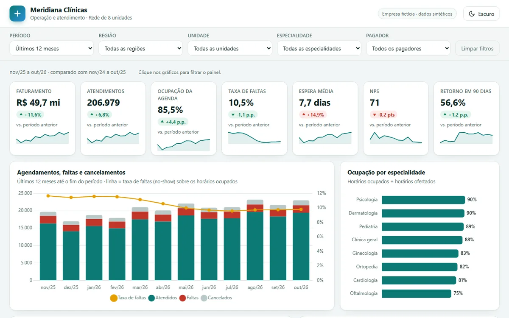

Dashboard · Meridiana Clínicas
Painel de operação e atendimento
8 clínicas e 78 profissionais: consultas, faltas, ocupação da agenda, receita por convênio e mapa de calor de horários.

- 7 indicadores, 7 gráficos e mapa de calor
- 5 filtros combináveis
- Tabela com busca, ordenação, paginação e CSV
- Tema claro e escuro, funciona no celular
Demonstração com dados fictícios e marca fictícia. Abre melhor em tela grande, mas funciona no celular.